Biodiversity catalogue
Flora and fauna of Biscay
Explore the species recorded in Bizkaia, discover their habitats and access selected species profiles.
Fauna species
Birds, mammals, fish, invertebrates, reptiles and amphibians.
| Photo | Profile | |||||
|---|---|---|---|---|---|---|
| FAU-001 |
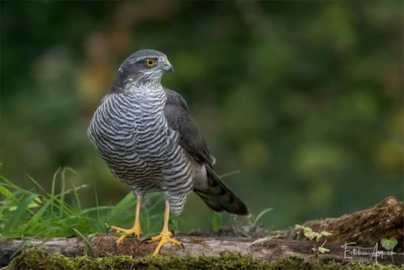 |
Eurasian sparrowhawk Gabirai arrunt | Accipiter nisus | Bird | Forests | Not available yet |
| FAU-002 |

|
European peacock butterfly Tximleta pauma | Aglais io | Invertebrate | Grasslands | Not available yet |
| FAU-003 |
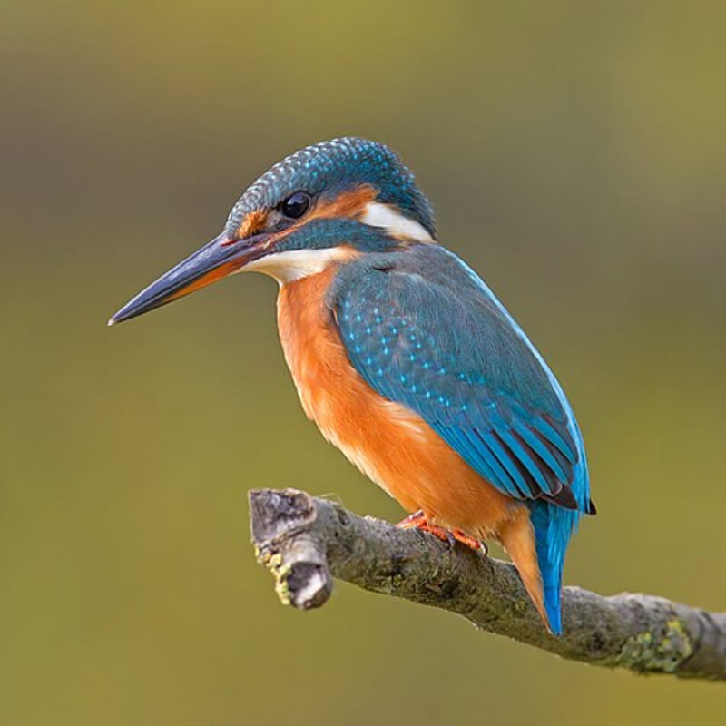 |
Common kingfisher Martin arrantzale | Alcedo atthis | Bird | Rivers | Not available yet |
| FAU-004 |

|
Common midwife toad Txantxiku arrunt | Alytes obstetricans | Amphibian | Rivers | Not available yet |
| FAU-005 |

|
Emperor dragonfly Enperadore-burruntzi | Anax imperator | Invertebrate | Rivers | Not available yet |
| FAU-006 |

|
European eel Ibai-aingira | Anguilla anguilla | Fish | Estuaries | Not available yet |
| FAU-007 |

|
Slow worm Ziraun | Anguis fragilis | Reptile | Grasslands | Not available yet |
| FAU-008 |

|
Tawny pipit Landa-txirta | Anthus campestris | Bird | Grasslands | Not available yet |
| FAU-009 |

|
Western honey bee Erle arrunt | Apis mellifera | Invertebrate | Grasslands | Not available yet |
| FAU-010 |

|
Grey heron Lertxun hauskara | Ardea cinerea | Bird | Marshes | Not available yet |
| FAU-011 |

|
Enkarterri donkey Enkarterriko astoa | Equus asinus | Mammal | Agricultural and livestock | Not available yet |
| FAU-012 |

|
Northern goshawk Arrano txiki | Astur gentilis | Bird | Forests | Not available yet |
| FAU-013 |

|
Buff-tailed bumblebee Baratze-erlastar | Bombus terrestris | Invertebrate | Grasslands | Not available yet |
| FAU-014 |

|
Spiny toad Apo arantzadun | Bufo spinosus | Amphibian | Forests | Not available yet |
| FAU-015 |

|
Dunlin Txirri arrunt | Calidris alpina | Bird | Beaches | Not available yet |
| FAU-016 |
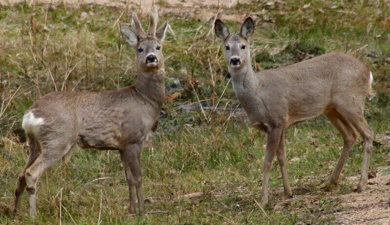 |
European roe deer Orkatza | Capreolus capreolus | Mammal | Forests | Not available yet |
| FAU-017 |

|
European goldfinch Karnaba | Carduelis carduelis | Bird | Agricultural and livestock | Not available yet |
| FAU-018 |

|
Common ringed plover Txirri lepokodun | Charadrius hiaticula | Bird | Beaches | Not available yet |
| FAU-019 |

|
Thicklip grey mullet Lazun ezpainlodi | Chelon labrosus | Fish | Estuaries | Not available yet |
| FAU-020 |

|
White-throated dipper Ur-zozo | Cinclus cinclus | Bird | Rivers | Not available yet |
| FAU-021 |

|
Seven-spot ladybird Marigorringo | Coccinella septempunctata | Invertebrate | Agricultural and livestock | Not available yet |
| FAU-022 |

|
Rock dove Haitz-uso | Columba livia | Bird | Cliffs | Not available yet |
| FAU-023 |
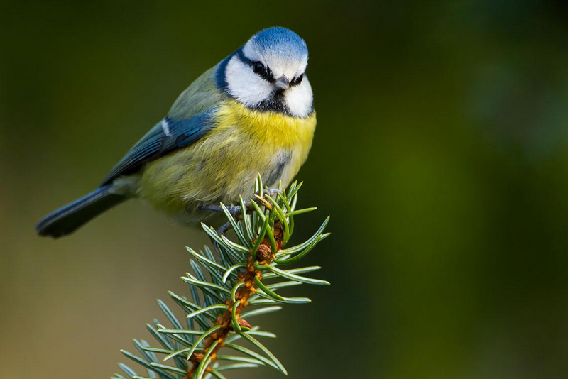 |
Eurasian blue tit Amilotx urdin | Cyanistes caeruleus | Bird | Forests | Not available yet |
| FAU-024 |

|
Short-beaked common dolphin Izurde arrunt | Delphinus delphis | Mammal | Open sea | Not available yet |
| FAU-025 |

|
Great spotted woodpecker Okil handi | Dendrocopos major | Bird | Forests | Not available yet |
| FAU-026 |

|
European seabass Lupia | Dicentrarchus labrax | Fish | Marine | Not available yet |
| FAU-027 |

|
European hedgehog Triku arrunt | Erinaceus europaeus | Mammal | Agricultural and livestock | Not available yet |
| FAU-028 |

|
European robin Txantxangorri | Erithacus rubecula | Bird | Forests | |
| FAU-029 |

|
Marsh fritillary Zilar-tximeleta | Euphydryas aurinia | Invertebrate | Wetlands | Not available yet |
| FAU-030 |

|
Basque Shepherd Dog Euskal Artzain Txakurra | Canis lupus familiaris | Mammal | Agricultural and livestock | Not available yet |
| FAU-031 |

|
Peregrine falcon Belatz handi | Falco peregrinus | Bird | Cliffs | Not available yet |
| FAU-032 |

|
European wildcat Basakatu | Felis silvestris | Mammal | Forests | Not available yet |
| FAU-033 |

|
Common chaffinch Pinu-txonta | Fringilla coelebs | Bird | Forests | Not available yet |
| FAU-034 |
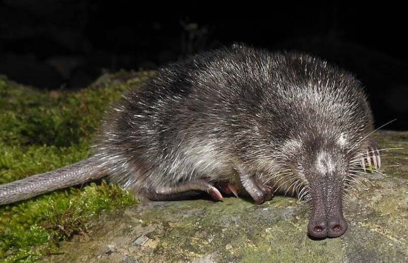 |
Pyrenean desman Pirinioetako muturluze | Galemys pyrenaicus | Mammal | Rivers | Not available yet |
| FAU-035 |

|
Eurasian jay Eskinoso | Garrulus glandarius | Bird | Forests | Not available yet |
| FAU-036 |
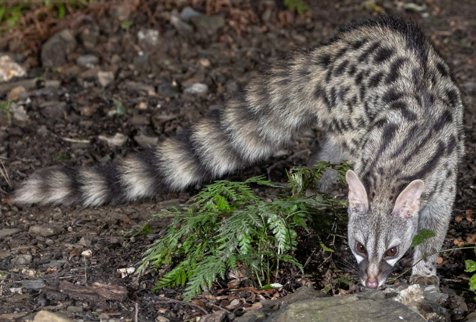 |
Common genet Katajineta | Genetta genetta | Mammal | Forests | Not available yet |
| FAU-037 |
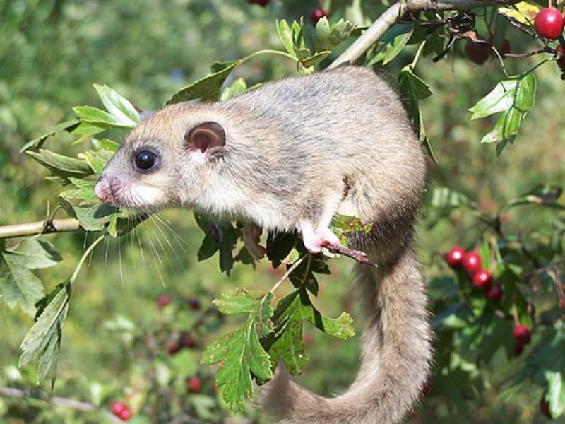 |
Edible dormouse Sarats-muxar | Glis glis | Mammal | Forests | Not available yet |
| FAU-038 |
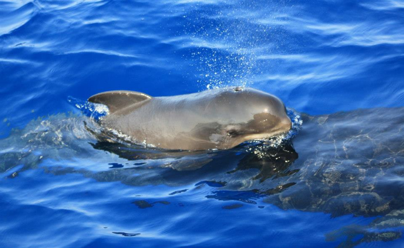 |
Long-finned pilot whale Kalderoi arrunt | Globicephala melas | Mammal | Open sea | Not available yet |
| FAU-039 |

|
Common brimstone Nerbio-tximeleta | Gonepteryx rhamni | Invertebrate | Thickets | Not available yet |
| FAU-040 |

|
European shag Ubarroi mottodun | Gulosus aristotelis | Bird | Islets | Not available yet |
| FAU-041 | Griffon vulture Sai zuria | Gyps fulvus | Bird | Limestone cliffs | Not available yet | |
| FAU-042 |

|
Barn swallow Enara arrunt | Hirundo rustica | Bird | Urban | Not available yet |
| FAU-043 |
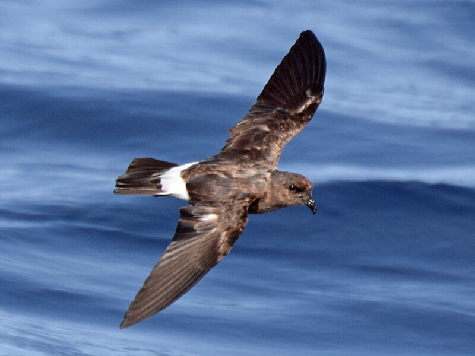 |
European storm petrel Ekaitz-txori | Hydrobates pelagicus | Bird | Islets | Not available yet |
| FAU-044 |

|
Moller's tree frog Hegoaldeko zuhaitz-igela | Hyla molleri | Amphibian | Riparian forests | Not available yet |
| FAU-045 |

|
Iberian emerald lizard Schreiber musker | Lacerta schreiberi | Reptile | Riparian forests | Not available yet |
| FAU-046 |

|
Yellow-legged gull Kaio hankahori | Larus michahellis | Bird | Coastal areas | Not available yet |
| FAU-047 |

|
Black-tailed godwit Kuliska buztanbeltz | Limosa limosa | Bird | Marshes | Not available yet |
| FAU-048 |

|
Palmate newt Uhandre palmatua | Lissotriton helveticus | Amphibian | Wetlands | Not available yet |
| FAU-049 |

|
Stag beetle Arkanbele | Lucanus cervus | Invertebrate | Forests | Not available yet |
| FAU-050 |

|
Eurasian otter Igaraba | Lutra lutra | Mammal | Rivers | Not available yet |
| FAU-051 |
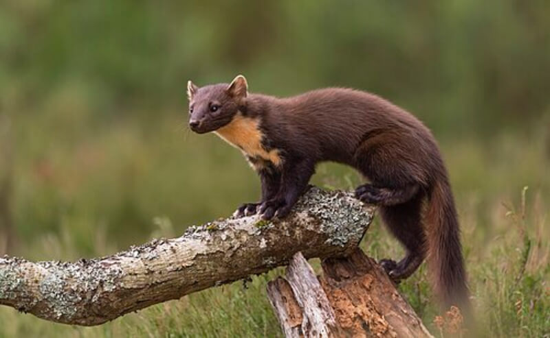 |
European pine marten Pagobaso-lepahori | Martes martes | Mammal | Forests | Not available yet |
| FAU-052 |
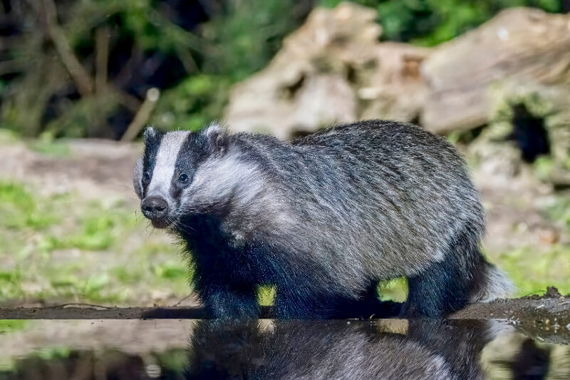 |
European badger Azkonar | Meles meles | Mammal | Forests | Not available yet |
| FAU-053 |

|
White wagtail Buztanikara zuri | Motacilla alba | Bird | Rivers | Not available yet |
| FAU-054 |

|
European mink Bisoi europarra | Mustela lutreola | Mammal | Riparian forests | Not available yet |
| FAU-055 |
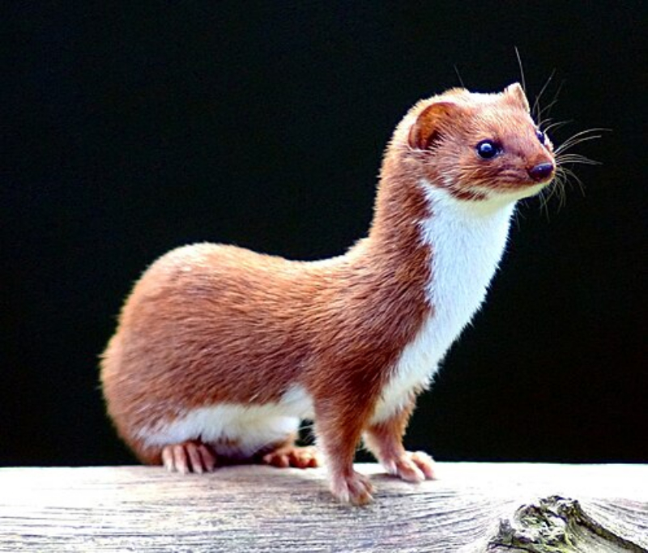 |
Least weasel Erbinude arrunt | Mustela nivalis | Mammal | Agricultural and livestock | Not available yet |
| FAU-056 |

|
Barred grass snake Suge belarrizo | Natrix helvetica | Reptile | Wetlands | Not available yet |
| FAU-057 |

|
Viperine water snake Suge biperakara | Natrix maura | Reptile | Rivers | Not available yet |
| FAU-058 |
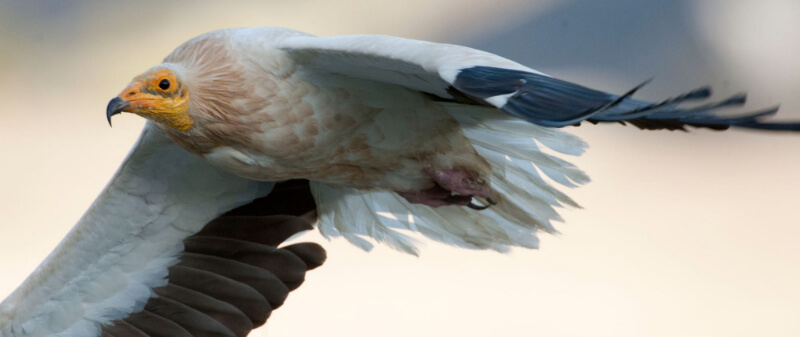 |
Egyptian vulture Sai zuri txiki | Neophron percnopterus | Bird | Limestone cliffs | Not available yet |
| FAU-059 |

|
Whimbrel Kurlinta txiki | Numenius phaeopus | Bird | Estuaries | Not available yet |
| FAU-060 |

|
Karrantzana sheep Karrantzako ardia | Ovis aries - Carranzana | Mammal | Agricultural and livestock | Not available yet |
| FAU-061 |

|
Latxa sheep Latxa ardia | Ovis aries - Latxa | Mammal | Grasslands | Not available yet |
| FAU-062 |

|
Blackspot seabream Errege-bisigua | Pagellus bogaraveo | Fish | Marine | Not available yet |
| FAU-063 |

|
Osprey Arrano arrantzale | Pandion haliaetus | Bird | Estuaries | Not available yet |
| FAU-064 |

|
Old World swallowtail Mika-tximeleta | Papilio machaon | Invertebrate | Grasslands | Not available yet |
| FAU-065 |

|
Great tit Kaskabeltz handi | Parus major | Bird | Forests | Not available yet |
| FAU-066 |
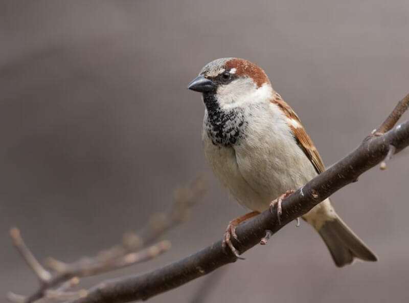 |
House sparrow Etxe-txori | Passer domesticus | Bird | Urban | Not available yet |
| FAU-067 |

|
Perez's frog Perez igela | Pelophylax perezi | Amphibian | Rivers | Not available yet |
| FAU-068 |

|
Eurasian minnow Zamo txiki | Phoxinus phoxinus | Fish | Rivers | Not available yet |
| FAU-069 |

|
Eurasian magpie Mika arrunt | Pica pica | Bird | Agricultural and livestock | Not available yet |
| FAU-070 | Eurasian spoonbill Mokozabal | Platalea leucorodia | Bird | Marshes | Not available yet | |
| FAU-071 |

|
Common wall lizard Horma-sugandila | Podarcis muralis | Reptile | Rocky outcrops | Not available yet |
| FAU-072 |

|
Pottok pony Pottoka | Equus caballus - Pottoka | Mammal | Grasslands | Not available yet |
| FAU-073 |
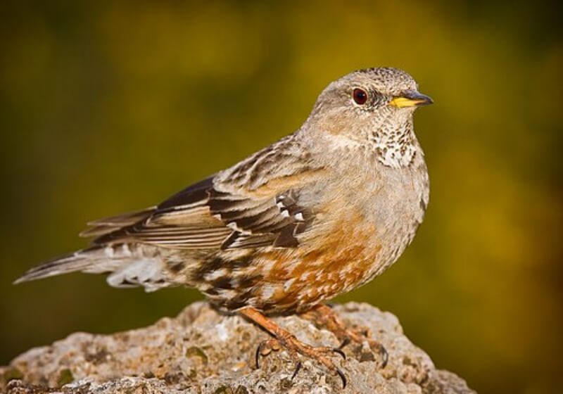 |
Alpine accentor Mendi-tuntun | Prunella collaris | Bird | Mountain peaks | Not available yet |
| FAU-074 |
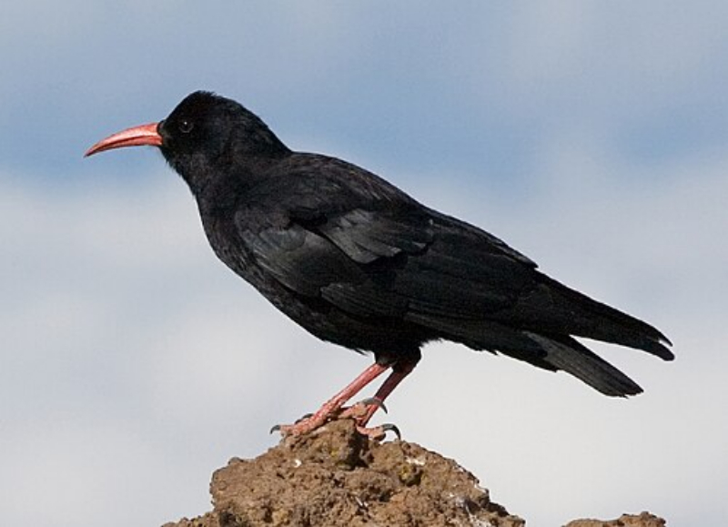 |
Red-billed chough Belatxinga mokogorri | Pyrrhocorax pyrrhocorax | Bird | Limestone cliffs | Not available yet |
| FAU-075 |

|
Common frog Baso-igel gorri | Rana temporaria | Amphibian | Wetlands | Not available yet |
| FAU-076 |
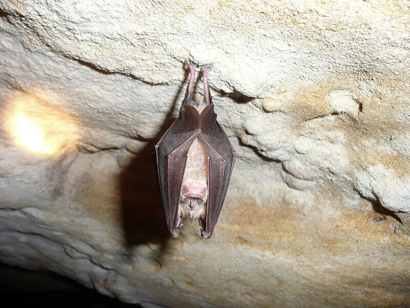 |
Greater horseshoe bat Ferra-saguzar handi | Rhinolophus ferrumequinum | Mammal | Caves | Not available yet |
| FAU-077 |

|
Fire salamander Uhandre pikart | Salamandra salamandra | Amphibian | Forests | Not available yet |
| FAU-078 |

|
Brown trout Ibai-amuarrain | Salmo trutta | Fish | Rivers | Not available yet |
| FAU-079 |

|
Red squirrel Katagorri arrunt | Sciurus vulgaris | Mammal | Forests | Not available yet |
| FAU-080 |

|
Tawny owl Urubia | Strix aluco | Bird | Forests | Not available yet |
| FAU-081 |

|
Wild boar Basurdea | Sus scrofa | Mammal | Forests | Not available yet |
| FAU-082 |

|
Eurasian blackcap Txinbo kaskabeltz | Sylvia atricapilla | Bird | Forests | Not available yet |
| FAU-083 |

|
Atlantic horse mackerel Txitxarro arrunt | Trachurus trachurus | Fish | Marine | Not available yet |
| FAU-084 |

|
Marbled newt Uhandre marmolaire | Triturus marmoratus | Amphibian | Wetlands | Not available yet |
| FAU-085 |
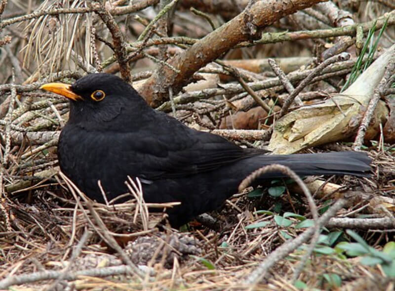 |
Common blackbird Zozo arrunt | Turdus merula | Bird | Forests | Not available yet |
| FAU-086 |
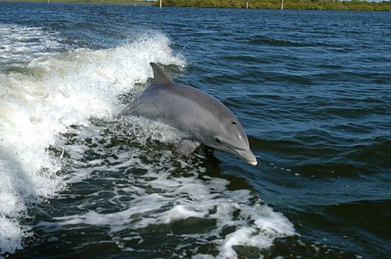 |
Common bottlenose dolphin Mular izurde | Tursiops truncatus | Mammal | Open sea | Not available yet |
| FAU-087 |
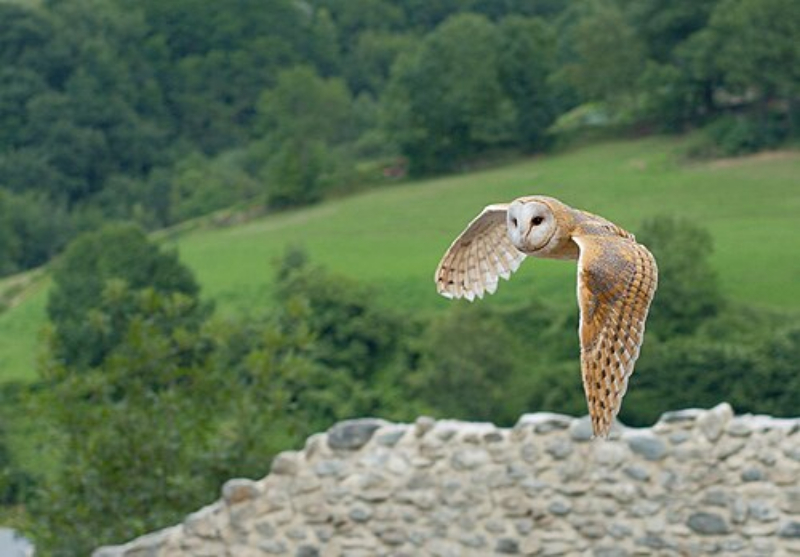 |
Western barn owl Hontz zuri | Tyto alba | Bird | Agricultural and livestock | Not available yet |
| FAU-088 |

|
Betizu cattle Betizu | Bos taurus - Betizu | Mammal | Mountains | Not available yet |
| FAU-089 |

|
Monchina cattle Montxina | Bos taurus - Monchina | Mammal | Agricultural and livestock | Not available yet |
| FAU-090 |

|
Red admiral Almirante gorri | Vanessa atalanta | Invertebrate | Grasslands | Not available yet |
| FAU-091 |

|
Seoane's viper Cantabriar sugegorri | Vipera seoanei | Reptile | Grasslands | Not available yet |
| FAU-092 |
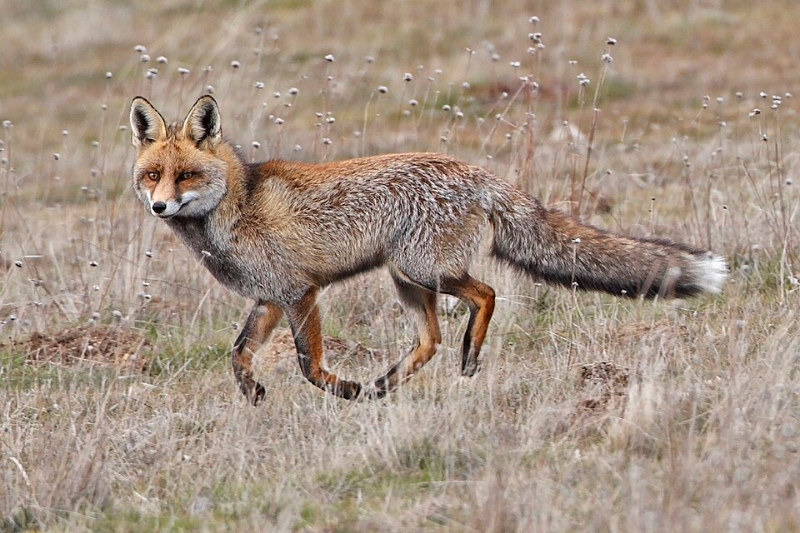 |
Red fox Azeri arrunt | Vulpes vulpes | Mammal | Forests | Not available yet |
Flora species
Trees and shrubs, ferns, aquatic plants, herbs, climbers and succulents.
| Photo | Profile | |||||
|---|---|---|---|---|---|---|
| FLO-001 |

|
Field maple Eihar arrunt | Acer campestre | Trees and shrubs | Forests | Not available yet |
| FLO-002 |
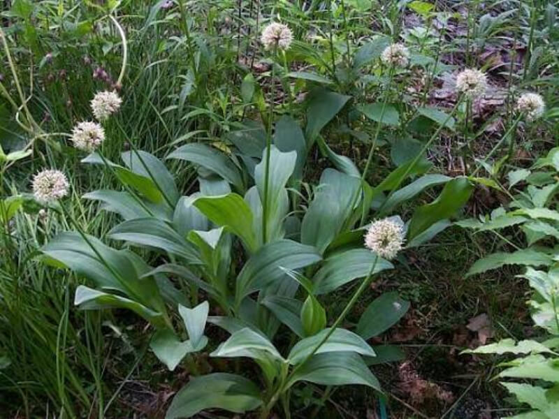 |
Victory onion Basatxiber | Allium victorialis | Herbs | Mountains | Not available yet |
| FLO-003 |

|
Black alder Haltz arrunt | Alnus glutinosa | Trees and shrubs | Riparian forests | Not available yet |
| FLO-004 |

|
European marram grass Hondar-harritzar | Ammophila arenaria | Herbs | Dunes | Not available yet |
| FLO-005 |
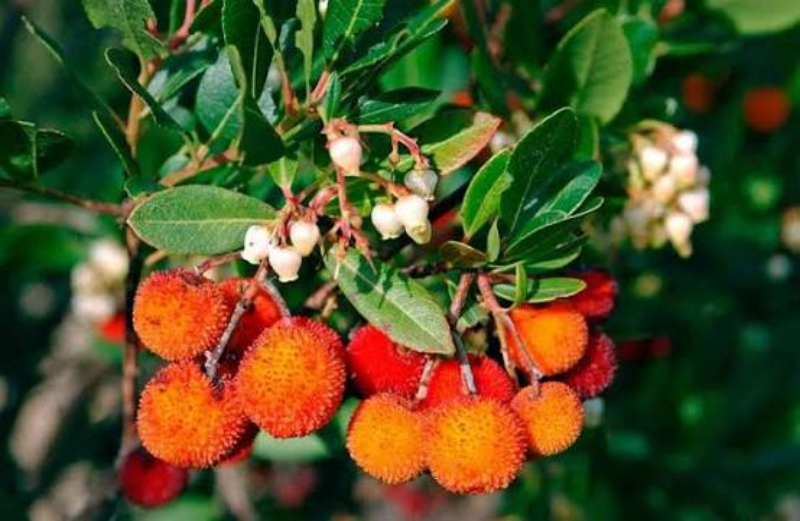 |
Strawberry tree Gurbitz | Arbutus unedo | Trees and shrubs | Forests | Not available yet |
| FLO-006 |
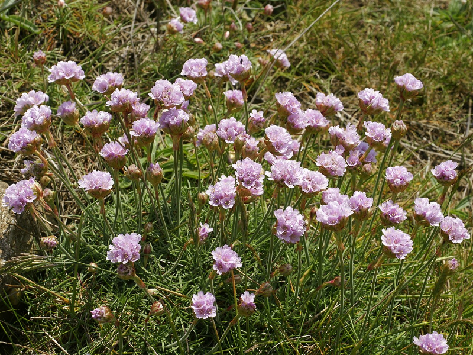 |
Sea thrift Itsas krabelin | Armeria maritima | Herbs | Cliffs | Not available yet |
| FLO-007 |

|
Mountain arnica Arnika | Arnica montana | Herbs | Grasslands | Not available yet |
| FLO-008 |

|
White asphodel Asfodelo zuri | Asphodelus albus | Herbs | Grasslands | Not available yet |
| FLO-009 |

|
Hart's-tongue fern Orein-hizkuntza | Asplenium scolopendrium | Ferns | Forests | Not available yet |
| FLO-010 |

|
Cantabrian birch Urki zuri | Betula celtiberica | Trees and shrubs | Mountains | Not available yet |
| FLO-011 |

|
European sea rocket Itsas errukula | Cakile maritima | Succulents | Beaches | Not available yet |
| FLO-012 |

|
Common heather Txilar arrunt | Calluna vulgaris | Trees and shrubs | Thickets | Not available yet |
| FLO-013 |

|
Sea bindweed Hondarretako ezkerte | Calystegia soldanella | Climbers | Dunes | Not available yet |
| FLO-014 |

|
Stemless carline thistle Eguzki-lore | Carlina acaulis | Herbs | Grasslands | Not available yet |
| FLO-015 |

|
Sweet chestnut Gaztainondo | Castanea sativa | Trees and shrubs | Forests | Not available yet |
| FLO-016 |

|
Old man's beard Ziorri | Clematis vitalba | Climbers | Thickets | Not available yet |
| FLO-017 |
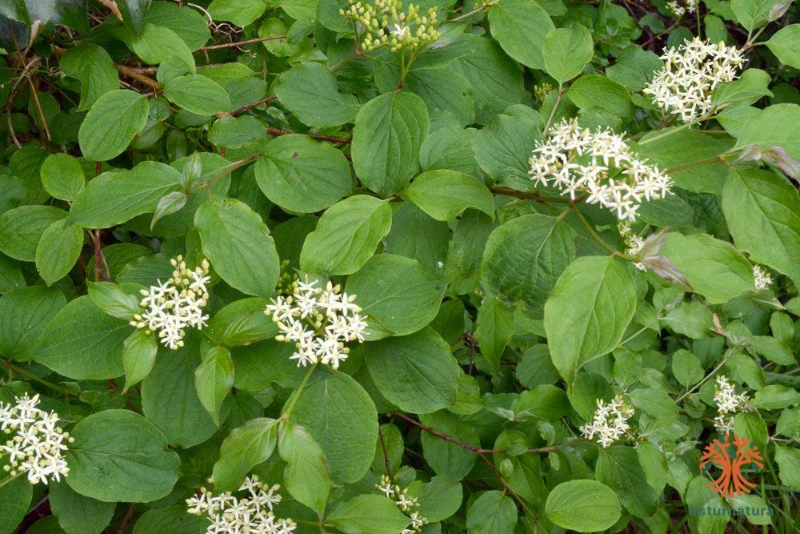 |
Common dogwood Zuhandor | Cornus sanguinea | Trees and shrubs | Thickets | Not available yet |
| FLO-018 |

|
Common hazel Hurritz | Corylus avellana | Trees and shrubs | Forests | Not available yet |
| FLO-019 |

|
Common hawthorn Elorri zuria | Crataegus monogyna | Trees and shrubs | Thickets | Not available yet |
| FLO-020 |
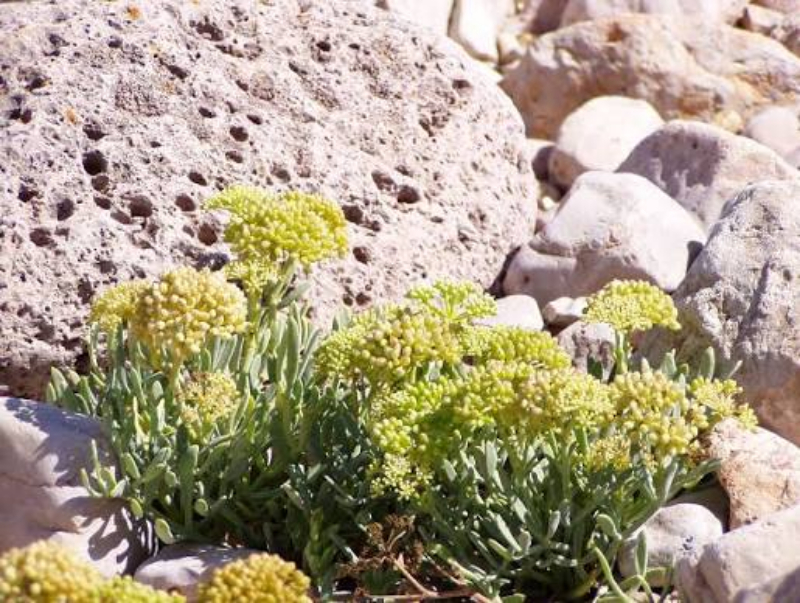 |
Rock samphire Itsas finikulu | Crithmum maritimum | Succulents | Coastal areas | Not available yet |
| FLO-021 |

|
Woolly tree fern Iratze erraldoi | Culcita macrocarpa | Ferns | Riparian forests | Not available yet |
| FLO-022 |

|
Cantabrian heath Txilar kantaura | Daboecia cantabrica | Trees and shrubs | Grasslands | Not available yet |
| FLO-023 |
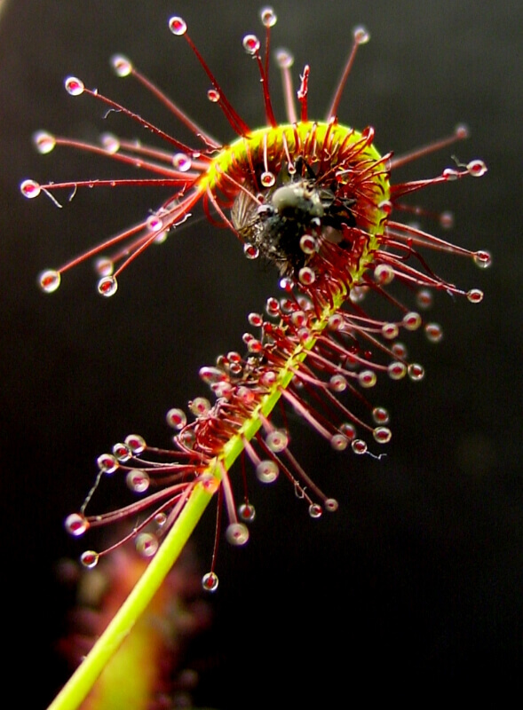 |
Cape sundew Lurmuturreko eguzki-ihintz | Drosera capensis | Herbs | Wetlands | Not available yet |
| FLO-024 |
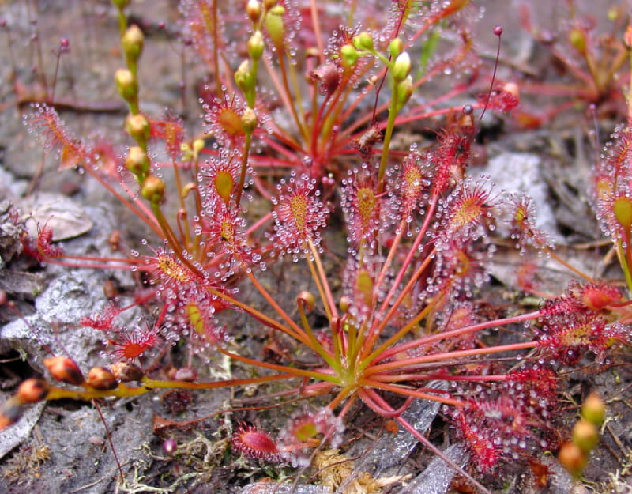 |
Oblong-leaved sundew Tarteko eguzki-ihintz | Drosera intermedia | Herbs | Wetlands | Not available yet |
| FLO-025 |

|
Round-leaved sundew Drosera borobila | Drosera rotundifolia | Herbs | Wetlands | Not available yet |
| FLO-026 |

|
Cross-leaved heath Txilar heze | Erica tetralix | Trees and shrubs | Wetlands | Not available yet |
| FLO-027 |

|
Cornish heath Txilar zuria | Erica vagans | Trees and shrubs | Grasslands | Not available yet |
| FLO-028 |
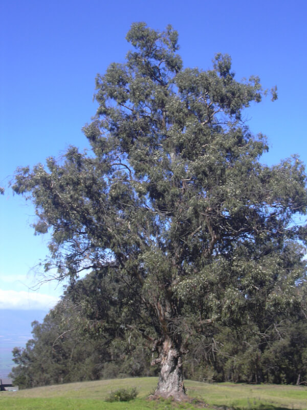 |
Blue gum eucalyptus Eukalipto urdin | Eucalyptus globulus | Trees and shrubs | Forests | Not available yet |
| FLO-029 |
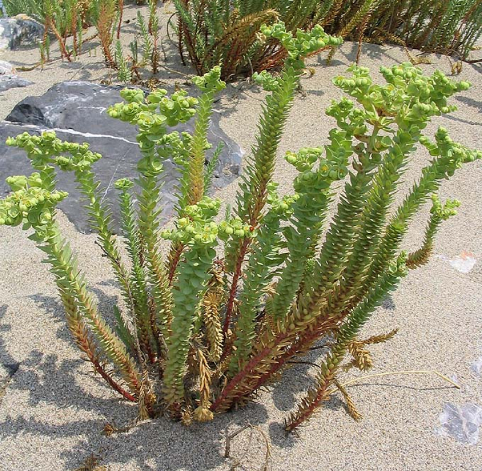 |
Sea spurge Itsas esne-belar | Euphorbia paralias | Succulents | Dunes | Not available yet |
| FLO-030 |

|
European beech Pago arrunt | Fagus sylvatica | Trees and shrubs | Forests | Not available yet |
| FLO-031 |

|
Alder buckthorn Zumar-heskai | Frangula alnus | Trees and shrubs | Wetlands | Not available yet |
| FLO-032 |

|
European ash Lizar arrunt | Fraxinus excelsior | Trees and shrubs | Riparian forests | Not available yet |
| FLO-033 |
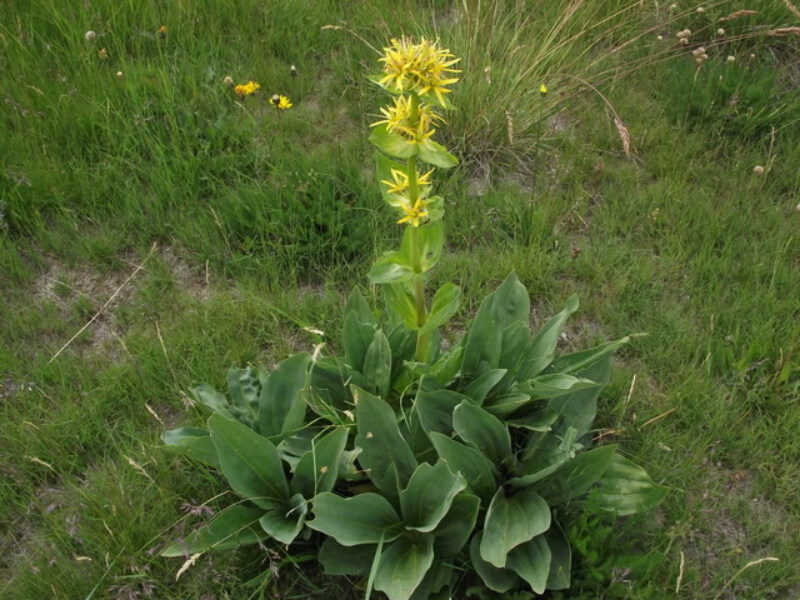 |
Great yellow gentian Errosta | Gentiana lutea | Herbs | Mountains | Not available yet |
| FLO-034 |

|
European holly Gorosti | Ilex aquifolium | Trees and shrubs | Forests | Not available yet |
| FLO-035 |
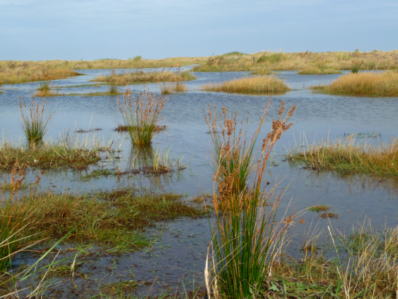 |
Sea rush Itsas junko | Juncus maritimus | Aquatic plants | Marshes | Not available yet |
| FLO-036 |

|
Common juniper Ipuru arrunt | Juniperus communis | Trees and shrubs | Rocky outcrops | Not available yet |
| FLO-037 |

|
Bay laurel Ereinotz | Laurus nobilis | Trees and shrubs | Coastal areas | Not available yet |
| FLO-038 |

|
Bogbean Uretako hirusta | Menyanthes trifoliata | Aquatic plants | Wetlands | Not available yet |
| FLO-039 |

|
Hoop-petticoat daffodil Txilintxa | Narcissus bulbocodium | Herbs | Grasslands | Not available yet |
| FLO-040 |

|
Wild daffodil Udaberri-lore | Narcissus pseudonarcissus | Herbs | Forests | Not available yet |
| FLO-041 |

|
Royal fern Errege-iratze | Osmunda regalis | Ferns | Riparian forests | Not available yet |
| FLO-042 |

|
Common reed Lezkari arrunt | Phragmites australis | Aquatic plants | Marshes | Not available yet |
| FLO-043 |

|
Pale butterwort Txirripa-belar | Pinguicula lusitanica | Herbs | Wetlands | Not available yet |
| FLO-044 |

|
Monterey pine Intsinis pinua | Pinus radiata | Trees and shrubs | Forests | Not available yet |
| FLO-045 |

|
Mastic tree Lentisko | Pistacia lentiscus | Trees and shrubs | Coastal areas | Not available yet |
| FLO-046 |

|
Sea plantain Itsas plantaina | Plantago maritima | Herbs | Marshes | Not available yet |
| FLO-047 |

|
Black poplar Makal beltz | Populus nigra | Trees and shrubs | Riparian forests | Not available yet |
| FLO-048 |
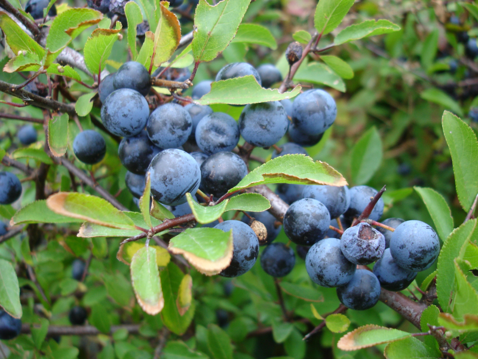 |
Blackthorn Ote-armi | Prunus spinosa | Trees and shrubs | Thickets | Not available yet |
| FLO-049 |

|
Bracken fern Iratze arrunta | Pteridium aquilinum | Ferns | Forests | Not available yet |
| FLO-050 |

|
Alpine pasqueflower Mendi-lore | Pulsatilla alpina | Herbs | Mountain peaks | Not available yet |
| FLO-051 |

|
Sessile oak Haritz petreoa | Quercus petraea | Trees and shrubs | Forests | Not available yet |
| FLO-052 |

|
Pedunculate oak Haritz arrunt | Quercus robur | Trees and shrubs | Forests | |
| FLO-053 |
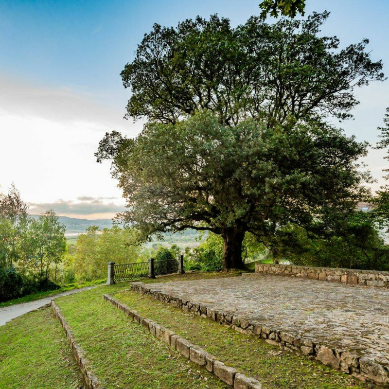 |
Holm oak Artea | Quercus ilex | Trees and shrubs | Mountains | Not available yet |
| FLO-054 |

|
Pyrenean oak Ametz | Quercus pyrenaica | Trees and shrubs | Forests | Not available yet |
| FLO-055 |
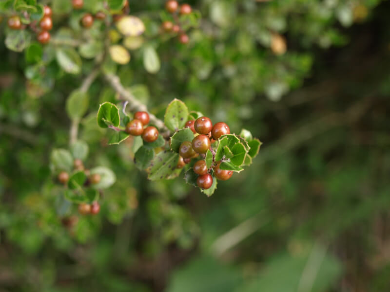 |
Mediterranean buckthorn Alaterno | Rhamnus alaternus | Trees and shrubs | Coastal areas | Not available yet |
| FLO-056 |

|
Glasswort Itsas belar | Salicornia ramosissima | Succulents | Estuaries | Not available yet |
| FLO-057 |

|
White willow Sauz zuri | Salix alba | Trees and shrubs | Riparian forests | Not available yet |
| FLO-058 |
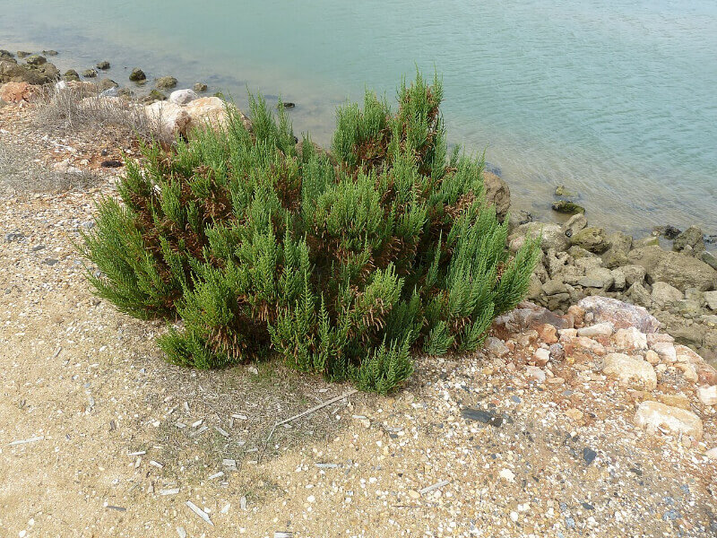 |
Woody glasswort Itsas sasi | Sarcocornia fruticosa | Succulents | Marshes | Not available yet |
| FLO-059 |

|
Babia saxifrage Saxifraga kantaura | Saxifraga babiana | Herbs | Limestone cliffs | Not available yet |
| FLO-060 |

|
Meadow saxifrage Harri-lore | Saxifraga granulata | Herbs | Grasslands | Not available yet |
| FLO-061 |

|
Common smilax Endalar | Smilax aspera | Climbers | Thickets | Not available yet |
| FLO-062 |

|
Dandelion Txikoria-belar | Taraxacum officinale | Herbs | Grasslands | Not available yet |
| FLO-063 |
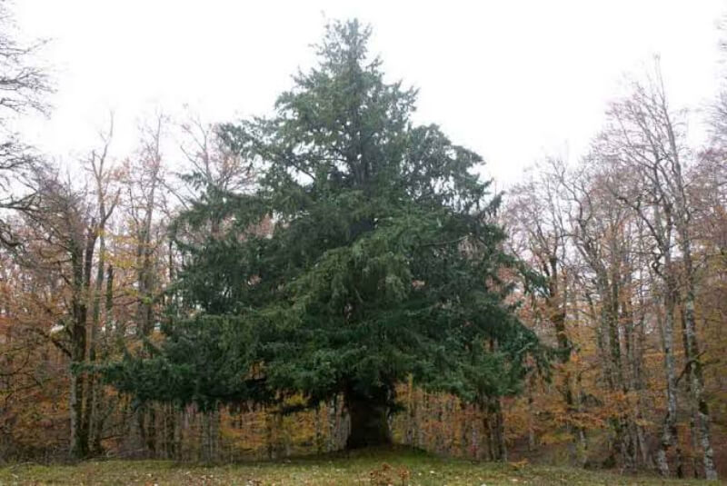 |
European yew Hagin | Taxus baccata | Trees and shrubs | Forests | Not available yet |
| FLO-064 |

|
White clover Hirusta zuri | Trifolium repens | Herbs | Grasslands | Not available yet |
| FLO-065 |

|
Common gorse Ote zuria | Ulex europaeus | Trees and shrubs | Thickets | Not available yet |
| FLO-066 |

|
Western gorse Ote txiki | Ulex gallii | Trees and shrubs | Thickets | Not available yet |
| FLO-067 |

|
Stinging nettle Asun arrunt | Urtica dioica | Herbs | Thickets | Not available yet |
| FLO-068 |

|
Bilberry Abi arrunt | Vaccinium myrtillus | Trees and shrubs | Mountains | Not available yet |
| FLO-069 |

|
Common eelgrass Itsas belar arrunt | Zostera marina | Aquatic plants | Estuaries | Not available yet |
| FLO-070 |

|
Dwarf eelgrass Itsas belar txiki | Zostera noltii | Aquatic plants | Estuaries | Not available yet |